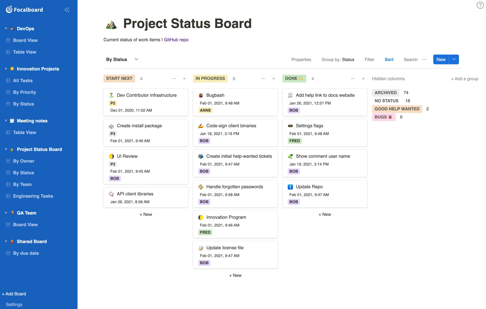
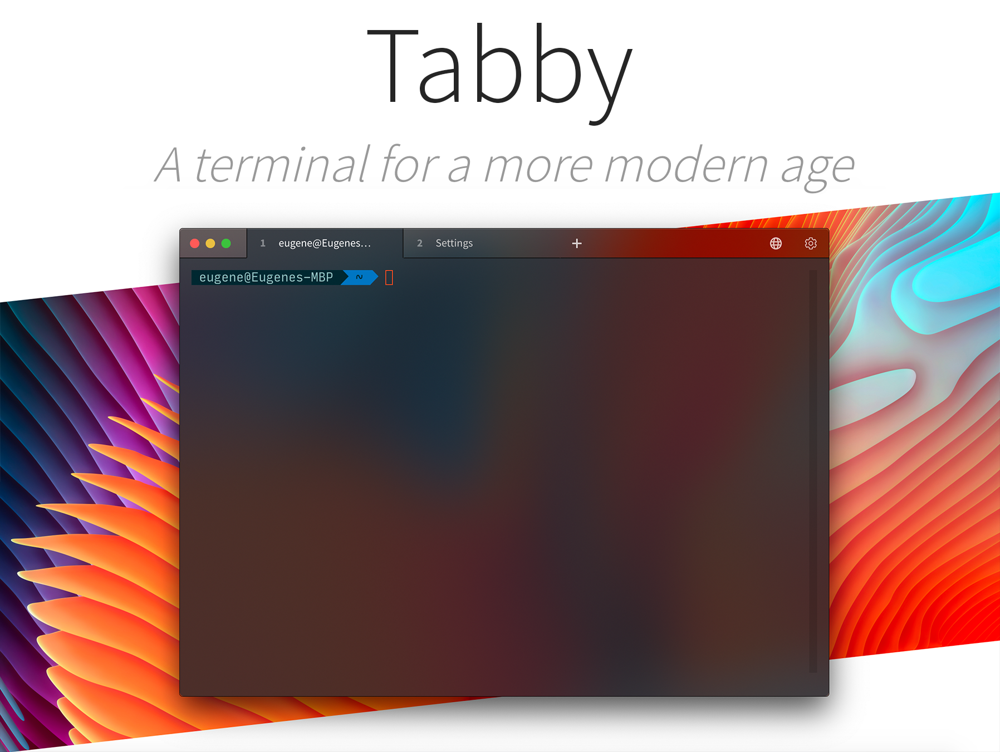
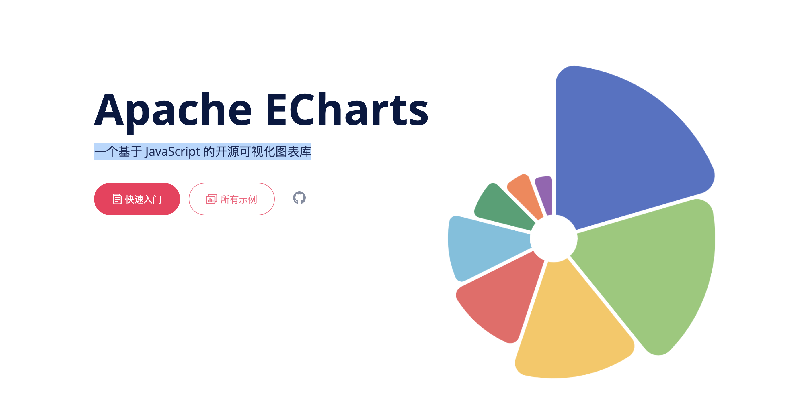
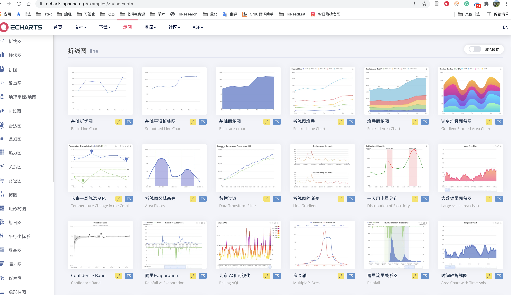

astro
https://github.com/withastro/astro
构建高加载速度的网站，访问更快
focalboard
https://github.com/mattermost/focalboard
focalboard是开源，本地使用目管理工具，可作为Notion的替代产品使用。

tabby
https://github.com/Eugeny/tabby
Tabby 是一名老外在 Github 开源的终端连接的工具，至今已经累积 20K+ star。
- 支持多平台，Windows、MacOS（Intel 芯片/M1 芯片）、Linux 都有对应的安装包的；
- 自带 SFTP 功能，能够与 Linux 系统传输文件；
- 炫酷的终端页面，简单易用，以及各种插件支持等

Echarts
https://echarts.apache.org/examples/zh/index.html
百度开发的，基于 JavaScript 的开源可视化图表库

